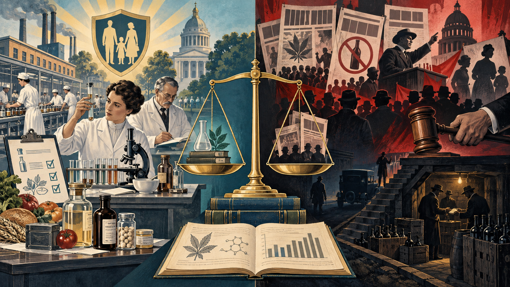

Drug laws do more than prohibit substances. They define categories,
authorize institutions, distribute resources, shape markets, and
determine which people encounter treatment, regulation, surveillance,
or punishment.
Opening story · Culture, power, and illegal markets
3.1 Narcocorridos: when music
enters a market governed by violence
Regional Mexican performers whose lives and public stories help
students examine music, power, territory, and violence in illegal
markets.
Content note: This story discusses murder, organized
crime, threats, and gendered violence.
A corrido tells a story in song. A narcocorrido tells
stories connected to smugglers, traffickers, cartel figures, outlaw
identities, money, loyalty, and betrayal. The form is rooted in
regional Mexican music and circulates on both sides of the
Mexico–United States border. Like gangsta rap, it may document,
dramatize, criticize, mythologize, or glorify an illegal world—but the
two traditions are not interchangeable.
Chalino Sánchez’s El crimen de Culiacán recounts a bloody
execution in Sinaloa. Los Tigres del Norte helped popularize the
modern narcocorrido with Contrabando y traición, a fictional
story in which Camelia and Emilio smuggle marijuana to Los Angeles
before Camelia shoots her partner amid betrayal, money, and love.
These are story-songs, but they also reveal a sociological problem:
when a profitable market is pushed outside lawful regulation, its
participants cannot openly use contracts, courts, licensing boards, or
consumer protections to resolve disputes.
The central lesson: drug prohibition does not make
demand, supply, debt, competition, or conflict disappear. It can
create a parallel system of governance in which reputation,
territorial control, threats, kidnapping, and violence substitute for
legal protection. The state still has laws, but illegal-market
participants cannot safely ask the state to enforce their agreements.
When singing can be interpreted as choosing a side
A singer may be paid to memorialize a trafficker, perform a song
associated with one organization, enter territory controlled by
another, refuse a commission, or appear to insult someone with power.
In that setting, artistic choices can be interpreted as alliances. Yet
cartel stories often grow faster than verified evidence, so the
responsible question is not simply “Which cartel ordered it?” but
“What conditions made coercion plausible—and made rumor feel
believable?”
Chalino Sánchez
During a 1992 performance in Culiacán, Sánchez received a note
widely believed to contain a death threat, appeared unsettled, and
continued singing. Armed men later took him from his vehicle; his
body was found the next morning. His murder remains unsolved, and
the contents of the note and motive have never been conclusively
established.
Valentín Elizalde, “El Gallo de Oro”
Elizalde, his manager, and his driver were shot after a 2006
performance in Reynosa. One popular explanation links the attack
to a song interpreted as antagonizing a cartel, but that motive
remains an allegation rather than a proven fact.
Sergio Vega, “El Shaka”
Vega was murdered in Sinaloa in 2010 while traveling to a concert,
only hours after publicly denying false reports that he had
already been killed. His death illustrates the real danger
surrounding some performers, although the specific motive was not
conclusively established.
Jenni Rivera, “La Diva de la Banda”
Rivera was not primarily a narcocorrido singer, but she became a
commanding woman in the male-dominated banda and regional Mexican
industry. A posthumously aired interview described death threats,
including threats surrounding a performance in Reynosa. Her plane
departed Monterrey in 2012 and crashed in Nuevo León.
Investigators identified a loss of control and serious aviation
irregularities—not evidence of a cartel attack. Persistent murder
rumors demonstrate how normalized violence shapes interpretation
even when an official finding points elsewhere.
Apply the Big Three
Structural functionalism Illegal markets
develop their own rules and enforcers, but violence, corruption,
fear, and weak public trust are major dysfunctions for the larger
society.
Conflict theory Cartels use money and coercion
to control territory, labor, stories, and reputations. Prohibition
can concentrate market power in organizations most capable of
violence.
Symbolic interactionism A song, performance,
nickname, rumor, or territory can become a symbol of loyalty or
disrespect, and that shared interpretation can produce deadly
consequences.
Policy connection: regulation cannot eliminate
organized crime by itself, and law is still needed against murder,
coercion, corruption, trafficking, and sales to minors. Regulation
can, however, move selected transactions into accountable systems
where disputes, product quality, employment, and access are governed
by enforceable rules rather than the threat of violence.
3.2 Law turns a social definition
into an official category
Once government classifies a substance, that definition can influence
medicine, research, policing, courts, employment, education, family
life, and public opinion. Legal status and pharmacological danger
overlap, but they are not the same measurement.
Four questions guide this topic: What problem did
lawmakers claim to solve? Which groups helped define the problem? What
changed after the law? Who experienced the intended and unintended
consequences?
3.3 Selected turning points in
U.S. federal drug law
1906
Pure Food and Drugs Act Required greater
honesty about certain ingredients and prohibited misbranding or
adulteration in interstate commerce. It marked a shift toward
federal consumer protection rather than a general ban on drug
possession.
1909
Smoking Opium Exclusion Act Restricted
importation of opium prepared for smoking. Its focus illustrates
how federal policy distinguished among forms of opium and the
groups associated with them.
1914
Harrison Narcotics Tax Act Used federal
registration, recordkeeping, taxation, and order forms to regulate
opiates and coca products. Later enforcement and court decisions
narrowed how physicians could supply drugs to people with
dependence.
1919–1933
National alcohol prohibition and repeal The
Eighteenth Amendment and Volstead Act restricted beverage alcohol.
The Twenty-first Amendment later repealed national prohibition.
The period demonstrates both intended control and latent
consequences such as illegal markets and enforcement burdens.
1930
Federal Bureau of Narcotics Congress created
the FBN within the Treasury Department. Under Harry Anslinger,
federal drug enforcement and anti-drug campaigns expanded.
1937
Marihuana Tax Act Used taxes and required
documentation to restrict cannabis. The Supreme Court’s 1969
Leary decision found the law’s operation violated the
Fifth Amendment privilege against self-incrimination. Congress
soon replaced the act through broader legislation.
1951 & 1956
Boggs Act and Narcotic Control Act Expanded
mandatory penalties and reflected a more punitive federal
approach.
1970
Controlled Substances Act Created the modern
federal scheduling framework and consolidated earlier federal drug
laws. Classification considers accepted medical use and abuse or
dependence potential.
1973
Drug Enforcement Administration The federal
government consolidated drug law enforcement functions in the new
DEA.
1986 & 1988
Anti-Drug Abuse Acts Expanded mandatory
minimum sentences and federal drug-control programs. The 1986 law
created the widely criticized 100-to-1 quantity disparity between
crack and powder cocaine for federal mandatory minimums.
2010
Fair Sentencing Act Reduced the federal
crack-to-powder cocaine quantity ratio from 100-to-1 to 18-to-1
and removed the federal mandatory minimum for simple possession of
crack cocaine.
2018
First Step Act and SUPPORT Act The First
Step Act made parts of the Fair Sentencing Act retroactive for
eligible federal cases. The SUPPORT Act addressed opioid
treatment, recovery, prevention, and related systems.
2023
Federal prescribing change for opioid use disorder Implementation of the Medication Access and Training
Expansion provisions removed the separate federal waiver
requirement formerly associated with prescribing buprenorphine for
opioid use disorder, while other prescribing requirements
remained.
3.4 When Law Follows Evidence—and
When Fear Selects the Evidence
No law is produced by science alone. Even when a measurable problem
exists, lawmakers must decide which risks deserve attention, which
institutions receive authority, and whose behavior will be regulated.
The useful comparison is therefore not “good law versus bad law,” but
the quality of the evidence, the fit between the problem and
the response, and the consequences that follow.

Consumer protection begins by measuring a product and correcting a
demonstrated hazard. Moral entrepreneurship can begin with a feared
group, select dramatic claims, and make punishment appear to be the
only response.
Problem-centered regulation
Document adulteration, contamination, deception, or injury.
Test products and compare evidence across cases.
Require truthful labels, sanitation, standards, and inspection.
Revise the rules when science identifies another hazard.
Group-centered prohibition
Associate a substance with a feared or stigmatized population.
Use exceptional stories as if they represented typical effects.
Equate use with addiction, immorality, violence, or social decline.
Expand punishment without comparing its harms with alternatives.
Federal response
Documented need
Social construction and power
Best classification
Pure Food and Drugs Act (1906)
Interstate foods and medicines could be adulterated or deceptively labeled, with little federal protection.
The act targeted products and claims more directly than identities, but enforcement and scientific capacity were still limited.
Strong documented need
Meat Inspection Act (1906)
Unsanitary processing and weak inspection produced genuine consumer and public-health concerns.
Journalism, public reaction, industry interests, and federal power shaped the form of reform.
Strong documented need
Harrison Narcotics Tax Act (1914)
Unregulated opiates and coca products, dependence, and inconsistent medical practice created real harms.
Later enforcement restricted maintenance prescribing and helped redefine some patients and users as criminals, pushing activity underground.
Mixed need and punitive construction
Volstead Act (1919)
Alcohol-related illness, family disruption, workplace injury, and violence were genuine problems.
Total national prohibition reflected temperance, religion, nativism, and political power; it did not adequately anticipate illicit supply, corruption, or violence.
Real harm; poorly fitted remedy
Marihuana Tax Act (1937)
Evidence presented for a national punitive response was limited and often sensational.
Anti-Mexican prejudice, racialized crime claims, media stories, and federal bureaucratic interests helped define cannabis as a national menace.
Fear outweighed evidence
Why radium belongs in this history: Radioactive patent
medicines and cosmetics became part of the broader evidence that
product regulation had to grow beyond the 1906 framework. The 1938
Federal Food, Drug, and Cosmetic Act expanded federal authority and
required evidence of drug safety before marketing. Radium was not the
single reason for either law, but it illustrates what happens when
novelty and advertising outrun testing.
From controlled product to illegal market
The Harrison Act did not invent drug-using subcultures. Social worlds
around opium, morphine, cocaine, medicine, nightlife, and dependence
already existed. Criminalization changed their conditions: access
became more secretive, sellers became more important, prices and legal
risk increased, and disputes could not be resolved through contracts
or ordinary courts. National alcohol prohibition then created a much
larger mass market in which established local networks could expand,
coordinate smuggling, corrupt officials, and invest profits in other
enterprises.
Prohibition does not eliminate demand. It can transfer production,
distribution, finance, and dispute settlement to organizations that
operate outside ordinary regulation.
Documented example
Organization varies
Activities documented or alleged in official research
Connection to prohibited markets
U.S. La Cosa Nostra families
Historically hierarchical families and alliances
Bootlegging, gambling, racketeering, extortion, corruption, fraud, and—among some groups—drug trafficking
Prohibition-era alcohol helped some enterprises accumulate money, territory, political connections, and distribution experience.
Mexico-based trafficking organizations
Cartels, factions, family ties, brokers, and flexible networks
Drug trafficking, money laundering, extortion, kidnapping, weapons acquisition, and corruption
Supply routes and territorial control become valuable because drugs cross borders outside lawful commerce.
Colombia-based trafficking organizations
Large historical cartels and later decentralized networks
Cocaine production and trafficking, money laundering, corruption, and violence
International demand and prohibition created unusually high profit margins for clandestine supply.
Yakuza / bōryokudan groups in Japan
Named syndicates with affiliates, alongside changing networks
Extortion, gambling, fraud, illicit markets, money laundering, and drug offenses
Drug markets are one income source, not the definition of every group or member.
Eurasian and Russian-speaking networks
Fluid transnational partnerships as well as more durable groups
Fraud, cybercrime, laundering, corruption, trafficking in drugs, people, weapons, and stolen goods
Financial and logistical specialists can serve several illegal markets rather than one substance.
Irish-American criminal enterprises
Historical neighborhood gangs and changing alliances
Bootlegging, gambling, robbery, labor racketeering, extortion, and drug trafficking by particular groups
The Volstead market rewarded control of docks, trucking, warehouses, political relationships, and local distribution.
Balkan criminal networks
Cross-border cells, brokers, kinship ties, and temporary alliances
Drug and weapons trafficking, money laundering, human smuggling, and contract violence
Networks connect production and wholesale supply to European consumer markets.
Nordic criminal networks and gangs
Local gangs, motorcycle groups, family-based groups, and transnational partners
Drug distribution, firearms offenses, fraud, extortion, and violence
It is more accurate to describe particular networks than a national “Swedish,” “Danish,” or “Norwegian Mafia.”
Australian outlaw motorcycle and trafficking networks
Club structures plus domestic and international partnerships
Illicit-drug supply, money laundering, extortion, violence, and firearms offenses
Remote supply chains and high retail prices can make the market attractive to organized importers and distributors.
South African gangs and transnational networks
Street gangs, prison-linked groups, brokers, and cross-border networks
Drug markets, extortion, robbery, firearms trafficking, corruption, and money laundering
Ports, inequality, local retail markets, and transnational routes interact; no single organization represents the country.
Do not confuse a criminal organization with an ethnic,
national, or immigrant population. These labels describe
particular enterprises identified in historical or official sources.
Most members of every named community have no relationship to
organized crime, and organizations change, fragment, cooperate, and
disappear.
Structural functionalism
Regulation can protect consumers through standards and inspections. Prohibition may express moral boundaries, yet illegal supply, corruption, violence, and lost tax revenue become latent dysfunctions.
Conflict theory
Powerful groups help decide which evidence counts, which populations become threatening, who receives enforcement resources, and who profits under either legal or illegal distribution.
Symbolic interactionism
Labels such as “medicine,” “consumer product,” “vice,” “addict,” and “criminal” change identities and interactions. The same chemical behavior can be interpreted differently across groups and institutions.
3.5 Tobacco: when a social
definition changes before the law
For much of the twentieth century, cigarette smoking was widely
presented as ordinary, adult, fashionable, and socially acceptable.
Tobacco remained legal, but public-health campaigns, scientific
evidence, lawsuits, workplace rules, and advertising restrictions
gradually changed what smoking meant. This is a useful
example of law responding to—and then reinforcing—a changing social
definition.
1 · Public educationThe American Cancer Society
took the Great American Smokeout nationwide in 1977, asking smokers
to try quitting for one day.
2 · Repeated visibilityAnnual campaigns made
cessation public and discussable. Smoking was increasingly framed as
a preventable health risk rather than merely a private habit.
3 · Institutional actionEmployers, airlines,
restaurants, schools, and governments increasingly restricted where
smoking could occur, especially as concern about secondhand smoke
grew.
4 · Litigation and regulationState lawsuits
culminated in the 1998 Master Settlement Agreement, which required
major payments and imposed significant restrictions on cigarette
advertising, promotion, and youth targeting.
Manifest function
The Smokeout’s stated purpose was to encourage people who smoked
to make a quit attempt and to draw attention to the health
benefits of stopping.
Broader social consequences
Repeated campaigns also helped make quitting visible, gave
nonsmoking a positive identity, and contributed to an environment
in which smoke-free rules became easier to imagine and support.
These outcomes were not produced by the Smokeout alone; research,
advocacy, personal experience, litigation, and policy interacted
over decades.
Law as a feedback loop
Changing attitudes made restrictions more politically possible.
Once adopted, smoke-free rules and marketing limits further
changed everyday expectations by making smoking less visible and
less socially routine.
Conflict perspective
Tobacco litigation exposed conflict among corporate profit, public
health, state health-care costs, consumer knowledge, and
government authority. The settlement also illustrates how
institutions compete to define a legal product as an individual
choice, a public-health risk, or a source of compensable social
cost.
Sociological takeaway: A substance does not have to
become illegal for its social meaning to change. Tobacco moved from a
widely normalized commodity toward a legal but increasingly regulated
and stigmatized product. Campaigns, evidence, lawsuits, and law each
shaped the others.
3.6 The federal scheduling system
The Controlled Substances Act places controlled substances into five
schedules. Select a schedule to compare its legal criteria and
examples. Scheduling is a regulatory classification, not a simple
ranking of overall social harm.
Do not infer that Schedule I always means “most dangerous in every
way.”
The schedules combine legal judgments about accepted medical use with
judgments about abuse and dependence potential. Alcohol and nicotine,
for example, are not scheduled under the federal CSA.
3.7 Past versus today
Current-law dashboard reviewed:
loading…
Loading current law notes…
Earlier approach
Current landscape
Sociological question
Taxation and registration used to control opium and coca
products.
The CSA uses schedules, registration, prescribing rules,
criminal law, and administrative regulation.
How did an economic control system become a criminal and
medical classification system?
Drug dependence increasingly framed as deviance and crime
during early federal enforcement.
Law still criminalizes conduct, while health systems also
treat substance use disorders as medical conditions.
Who receives treatment, and who receives punishment?
Federal crack penalties treated much smaller quantities like
far larger quantities of powder cocaine.
The Fair Sentencing Act reduced, but did not eliminate, the
federal disparity.
How did race, class, media narratives, and political urgency
influence sentencing?
Cannabis prohibition grew through taxation, enforcement, and
later CSA scheduling.
State laws vary widely. Federal rescheduling proceedings
remained active in 2026.
What happens when state and federal definitions conflict?
Fear of arrest could discourage witnesses from seeking help
during an overdose.
Many jurisdictions, including North Carolina, provide limited
immunity under specified conditions when someone seeks
emergency help.
How can law reduce harm without fully removing enforcement?
Reading a current-law update: A proposal, hearing,
bill, court order, or agency announcement does not always change the
law immediately. Check whether the action became final, its effective
date, the jurisdiction, and whether later action changed it again.
3.8 North Carolina law in 2026
State schedules
North Carolina maintains its own controlled-substance schedules.
State law places marijuana in Schedule VI and excludes qualifying
hemp products at or below the statutory delta-9 THC threshold.
Other substances appear in Schedules I through V under state
criteria.
Overdose assistance
North Carolina provides limited immunity from prosecution for
specified offenses when a person seeks emergency medical
assistance in good faith and satisfies the statute’s conditions.
The protection is limited, not a general immunity from every
possible charge.
Federal and state law can differ
A behavior may be treated differently under federal law and North
Carolina law. Students should always identify the jurisdiction,
exact substance, conduct, and date.
Recent change
A 2025 North Carolina session law created offenses involving
knowingly, intentionally, or recklessly exposing a child under 16
to a controlled substance, with penalties that increase when
ingestion, injury, or death results. It took effect December 1,
2025.
This page teaches sociological analysis, not personal legal
advice.
Statutes, administrative rules, court decisions, local practices,
tribal law, and federal law may interact. Consult current official
sources for a real situation.
3.9 What laws do socially?
DefineLaw gives official names to substances,
conduct, authorized users, and violations.
AuthorizeLaw gives agencies and professionals power
to prescribe, regulate, investigate, prosecute, treat, or distribute
resources.
Deter and punishSanctions attempt to influence
behavior and communicate boundaries.
Protect and enableConsumer rules, treatment access,
overdose immunity, and medication policy can reduce harm or enable
care.
Create marketsProhibition, medical access,
licensing, taxation, and enforcement reshape price, availability,
purity, and profit.
Distribute consequencesSurveillance, arrests,
sentencing, treatment access, and stigma may fall unevenly across
communities.
3.10 Policy consequence lab
A city responds to increasing overdose deaths. Which proposal most
clearly combines public health and social control?
Choose a proposal, then examine both intended and latent consequences.
Drug Enforcement Administration. (n.d.).
Notice of proposed rulemaking: Proposed rescheduling of
marijuana. Retrieved September 15, 2026, from
https://www.dea.gov/NPRM2026
Historical foundation reviewed: September 11, 2026.
Current items use one separate update file so they can be revised
without rewriting the historical timeline.